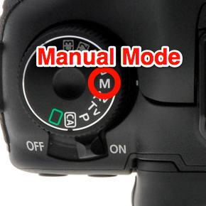

The Main Settings
If you want to take photos more efficiently, you should do it in manual mode on your camera:
In a manual mode, you should always set 3 main options in order to an environment: Shutter Speed, Aperture and ISO:

Also
Besides, such things like white balance, focal length and an exposure ought to be taken into account.
Don't forget about an atmosphere, foreshortening and post-processing - these thing must satisfy your ideas.
And the main criteria of the best style of taking photographs is not to be afraid of doing experiments - trying new styles or strange locations.
Although it can seem a bit daunting at first, the exposure triangle simply refers to the three most important elements of exposure; ISO, aperture and shutter speed. When you’re shooting in manual mode, you’ll need to be able to balance all three of these things in order to get sharp, well-lit photos.
ISO: ISO controls the camera’s sensitivity to light. A low ISO setting means the camera will be less sensitive to light, while a higher ISO means it will be more sensitive to light. An ISO setting of 100 to 200 is usually ideal when shooting outdoors during the day, but when shooting in low light situations, such as indoors or at night, a higher ISO of 400 to 800 or higher might be necessary.
Aperture: Aperture is the opening in your lens and controls how much light gets through to the camera’s sensor. A wider aperture (indicated by a lower f-number) lets more light through, while a narrow aperture (indicated by a higher f-number) lets less light through. A wide aperture is great when you want to isolate your subject, but when you want the whole scene to be in focus, such as with group shots, you’ll need to use a narrow aperture.
Shutter speed: Shutter speed controls how long the shutter stays open when you take a picture. The longer the shutter stays open, the more light gets through to the camera’s sensor. A fast shutter speed is good for freezing action, while a longer shutter speed will blur motion. Read more about understanding shutter speeds on our blog.